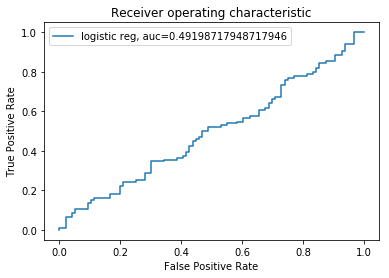

This work describes a general approach to follow when performing machine learning (ML) manually, and when automating in a deployment setting. Unlike a classical statistical analysis, standard machine learning projects typically follow a general and repeatable process. While the practicioner should be aware of details for each of the steps and the reasons for choosing them, there is much less design-thinking and checking of assumptions that are necessary components of more mathematical modeling fields. This makes the machine learning process amenable to deployment as a service because automating the re-training and prediction of a model with consistent data is straight-forward programming.
Model Theory
Most of the design-thinking in the ML process is in choosing a variety of models for comparing performance against. The following three characteristics succinctly describe a ML model.
- Representation: structural model characteristics
- name
- family
- interpretability
- type
- generative / discriminative
- bias / var
- fixed- / variable- learner
- Evaluation: functions applied to the structure
- objective
- cost
- loss
- Optimization: algorithms necessary to solve for parameters
It is also important to understand how the chosen model effects the modeling process
- assumptions inherent in representation
- alignment of loss function with project goals
- sources of bias / variance
- determination of resource constraints
- enumeration of how over-tuning can occur (regularization)
- understanding when manual methods are ineffective ‘fiddling’ of model implementation parameters
- statement of strong false assumptions can be better than weak true ones, because they need more data
Note: This should be considered carefully with feature engineering and feature selection to ensure the input transformations align with the model.
The Machine Learning Process
The following are the general steps taken in the ML Process. They are similar to many other problem-solving and design-thinking processes, but tailored to ML specifics.
There a several hard checks that should be used to ensure the practicioner is maintaining honesty. One important check is laying-out proper evaluation methods, before implementing them. This is similar to classical statistics in choosing an accepatable p-value before running the model.
Another check is on model resource and time requirements. More sophisticated models need more memory to implement and take a longer time to run. These are highly dependent on the environment they are deployed to. These should be determined with the customer, at the beginning.
Discover
- determine problem and constraints
- determine characteristics the problem / scenario dictates on the solution
- model family
- acceptable methods of dimensionality reduction and regularization
- deployment environment
- decide evaluation
- primary / secondary evaluation score (ie. accuracy)
- methods of evaluation (ie. confusion matrix, roc)
Collect and Transform
- obtain raw data
- internal data warehouses
- external APIs and services
- integration and cleaning
- filter, aggregate, and query
Summary and Process
- exploration
- preparation
- address balance (classification, anova, etc.)
- create Train, Validate, Test with split (above)
- configure Feature Extraction with feature_union
- configure Preprocess and choose model-families with pipeline
Build
- train the models
- apply k-folds CV and grid search with Training set
- perform on multiple model-families and hyper-parameters
- evaluate models
- review afore-mentioned confusion matrix, scoring, classifier-threshold, and tests
- select the best model-family / hyper-parameters
- apply to Validation set or all of Training set to model-family to parameterize it and set as the final model
- refine performance
- debug performance with learning curve, lift chart
- use Testing set to evaluate final model characteristics
- export to binary file
Deliver
- select solution
- design interface most appropriate for using the model
- automate data integration and pipelines
- implement model in deployable environment
- deploy solution within system environments
Note: Train, Validate, and Test should be from different (independent) data sets, if possible.
Stakeholder Interaction and Timeline
It is useful to display these in relation to interactions that must take place with stakeholders. These may be business users who need a problem solved, or technology departments that will have to support applications that implement the solution. The y-axis show stage proximity to these stakeholders.
While every project is different, most stages use a similar proportion of time. The horizontal axis lays-out the timeline.

Demonstation
The following code demonstrates the programming portions of these stages and steps using a toy example on a simulated diverse dataset of both numeric and categorical data. It separates the columns and uses transform pipelines to perform different dimensionality reduction techniques.1 This does display the important steps that must be taken with stakeholders.
Configuration
%matplotlib inline
import warnings
warnings.filterwarnings('ignore')
pd.set_option('display.max_rows', 10)
import random
import string
def randomString(stringLength=10):
"""Generate a random string of fixed length """
letters = string.ascii_lowercase
return ''.join(random.choice(letters) for i in range(stringLength))
#modules
import pandas as pd
import numpy as np
from sklearn.preprocessing import LabelEncoder
from sklearn.preprocessing import OneHotEncoder
from sklearn.impute import SimpleImputer
from sklearn.preprocessing import StandardScaler
from sklearn.compose import ColumnTransformer
from sklearn.pipeline import Pipeline
from sklearn.pipeline import FeatureUnion
from sklearn.feature_selection import SelectKBest
from sklearn.decomposition import PCA
from sklearn.linear_model import LogisticRegression
from sklearn.model_selection import train_test_split
from sklearn.model_selection import KFold
from sklearn.model_selection import cross_val_score
from sklearn.model_selection import GridSearchCV
from sklearn.model_selection import learning_curve
Collect and Transform
#make data (both numeric and categorical)
iCOLUMNS = 50
iROWS = 1000
#generate classification dataset
from sklearn.datasets.samples_generator import make_blobs
X_cat, Y_cat = make_blobs(n_samples=iROWS, centers=2, n_features=iCOLUMNS, random_state=1)
categories = [randomString(5) for x in range(5)]
cols = [random.choices(categories, k=iCOLUMNS) for _ in range(iROWS)]
X_cat = np.array(cols)
#generate regression dataset
from sklearn.datasets.samples_generator import make_regression
X_num, not_used = make_regression(n_samples=iROWS, n_features=iCOLUMNS, noise=0.1, random_state=1)
#set in dataframe
dfX_cat = pd.DataFrame(X_cat, columns=['IndepCat-'+str(x) for x in range(iCOLUMNS)] )
dfX_num = pd.DataFrame(X_num, columns=['IndepNum-'+str(x) for x in range(iCOLUMNS)])
dfY_cat = pd.DataFrame(Y_cat, columns=["Dep"])
dfData = pd.concat([dfY_cat, dfX_cat, dfX_num], axis=1)
Summary and Process
#separate
X = dfData.drop('Dep', axis=1)
y = dfData['Dep']
#encode y and create datasets
enc = LabelEncoder()
y_set = enc.fit_transform(y)
X_train, X_test, y_train, y_test = train_test_split(X, y_set, test_size=0.2)
print( "Training records: %s"%(X_train.shape[0]) )
print( "Testing records: %s"%(X_test.shape[0]) )
Training records: 800
Testing records: 200
#create feature union of numeric data
features = []
features.append(('pca', PCA())) #<<<GRID
features.append(('select_best', SelectKBest())) #<<<GRID
num_feature_eng = FeatureUnion(features)
#create the preprocessing pipelines for both numeric and categorical data
numeric_features = [x for x in X_train.columns if x.split('-')[0]=='IndepNum' ]
numeric_transformer = Pipeline(steps=[
('imputer', SimpleImputer(strategy='median')),
('scaler', StandardScaler()),
('num_feature_eng', num_feature_eng)
])
categorical_features = [x for x in X_train.columns if x.split('-')[0]=='IndepCat' ]
categorical_transformer = Pipeline(steps=[
('imputer', SimpleImputer(strategy='constant', fill_value='missing')),
('onehot', OneHotEncoder(handle_unknown='ignore')),
('select_best', SelectKBest(k=6))
])
preprocessor = ColumnTransformer(
transformers=[
('num', numeric_transformer, numeric_features),
('cat', categorical_transformer, categorical_features)])
#append classifier to preprocessing pipeline
#full prediction pipeline
clf = Pipeline(steps=[('preprocessor', preprocessor),
('classifier', LogisticRegression(solver='lbfgs'))])
param_grid = {
'preprocessor__num__imputer__strategy': ['mean', 'median'],
'classifier__C': [0.1, 1.0, 10, 100],
'preprocessor__num__num_feature_eng__pca__n_components': [.75, .80, .85, .90, .95],
'preprocessor__num__num_feature_eng__select_best__k': [5, 7, 9, 11]
}
gridClf = GridSearchCV(clf, param_grid, cv=5)
Build
gridClf.fit(X_train, y_train)
GridSearchCV(cv=5, error_score='raise-deprecating',
estimator=Pipeline(memory=None,
steps=[('preprocessor', ColumnTransformer(n_jobs=None, remainder='drop', sparse_threshold=0.3,
transformer_weights=None,
transformers=[('num', Pipeline(memory=None,
steps=[('imputer', SimpleImputer(copy=True, fill_value=None, missing_values=nan,
strategy='median', verbo...enalty='l2', random_state=None, solver='lbfgs',
tol=0.0001, verbose=0, warm_start=False))]),
fit_params=None, iid='warn', n_jobs=None,
param_grid={'preprocessor__num__imputer__strategy': ['mean', 'median'], 'classifier__C': [0.1, 1.0, 10, 100], 'preprocessor__num__num_feature_eng__pca__n_components': [0.75, 0.8, 0.85, 0.9, 0.95], 'preprocessor__num__num_feature_eng__select_best__k': [5, 7, 9, 11]},
pre_dispatch='2*n_jobs', refit=True, return_train_score='warn',
scoring=None, verbose=0)
print(("best logistic regression from grid search: %.3f"
% gridClf.score(X_test, y_test)))
best logistic regression from grid search: 0.515
# Cross Validation
#GridSearchCV: Mean cross-validated score of the best_estimator
#SGDClassifier: Returns the mean accuracy on the given test data and labels
print("Best Score: (CV score=%0.3f)" % gridClf.best_score_)
print("\n")
print("Best Parameters\n %s" % gridClf.best_params_ )
print("\n")
print("Best Estimator\n %s" % gridClf.best_estimator_ )
Best Score: (CV score=0.484)
Best Parameters
{'classifier__C': 10, 'preprocessor__num__imputer__strategy': 'mean', 'preprocessor__num__num_feature_eng__pca__n_components': 0.9, 'preprocessor__num__num_feature_eng__select_best__k': 5}
Best Estimator
Pipeline(memory=None,
steps=[('preprocessor', ColumnTransformer(n_jobs=None, remainder='drop', sparse_threshold=0.3,
transformer_weights=None,
transformers=[('num', Pipeline(memory=None,
steps=[('imputer', SimpleImputer(copy=True, fill_value=None, missing_values=nan, strategy='mean',
verbose...enalty='l2', random_state=None, solver='lbfgs',
tol=0.0001, verbose=0, warm_start=False))])
# Confusion Matrix
from sklearn.metrics import confusion_matrix
y_train_pred = gridClf.predict(X_train)
print( "Confusion matrix: Training")
confusion_matrix(y_train, y_train_pred)
Confusion matrix: Training
array([[255, 149],
[146, 250]])
y_pred = gridClf.predict(X_test)
print( "Confusion matrix: Testing")
confusion_matrix(y_test, y_pred)
Confusion matrix: Testing
array([[51, 45],
[52, 52]])
# Testing
#predictions for outcome labels
#Predict class probabilities for X. The predicted class probabilities of an input sample are computed as the mean predicted
#class probabilities of the trees in the forest. The class probability of a single tree is the fraction of samples of the same
#class in a leaf.
y_class_prob = gridClf.predict_proba(X_test) # called predict_proba(), for some classifiers
y_prob = np.asarray( [x[1] for x in y_class_prob], dtype=np.float32)
threshold = 0 # set threshold
y_some_digit_pred = (y_prob > threshold)
print( "Average training probability: %0.3f" % np.mean(y_prob) )
#roc auc
from sklearn.metrics import roc_auc_score
print( "Area Under ROC Curve: %0.3f" % roc_auc_score(y_test, y_prob) )
Average training probability: 0.484
Area Under ROC Curve: 0.492
log_y_prob = gridClf.decision_function(X_test)
from sklearn import metrics
import numpy as np
import matplotlib.pyplot as plt
#plt.figure(0).clf()
#LogisticRegression
y_prob = log_y_prob
fpr, tpr, thresh = metrics.roc_curve(y_test, y_prob)
auc = metrics.roc_auc_score(y_test, y_prob)
plt.plot(fpr,tpr,label="logistic reg, auc="+str(auc))
plt.xlabel('False Positive Rate')
plt.ylabel('True Positive Rate')
plt.title('Receiver operating characteristic')
plt.legend(loc=0)
plt.show()

Deliver
from sklearn.externals import joblib
import os
cwd = os.getcwd()
file_path = cwd+'/Data/project/Models/'
#save the model to disk
filename = file_path+'finalized_model.sav'
joblib.dump(gridClf, filename)
#in deployment application...
#load the model from disk
loaded_model = joblib.load(filename)
result = loaded_model.score(X_test, Y_test)
print(result)
Conclusion
In this work, we provide an orthodox approach to the ML Process. We list the stages involved and the steps for each, and align these with more traditional modeling and analysis processes. Demo code runs through the basic ideas. This code can be modified in order to automate processing in a separate environment, such as a deployed service. The complete process can be generalized to many situations.